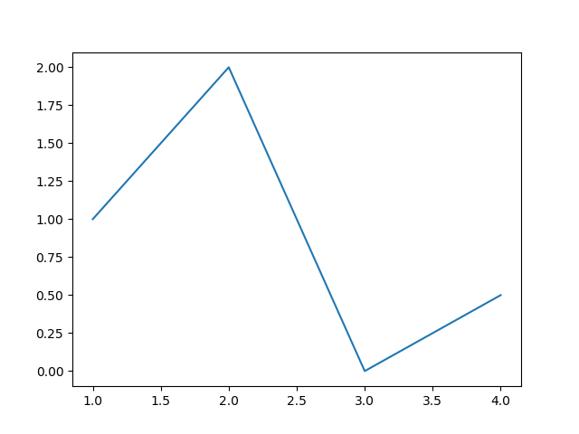
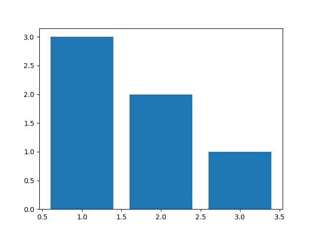
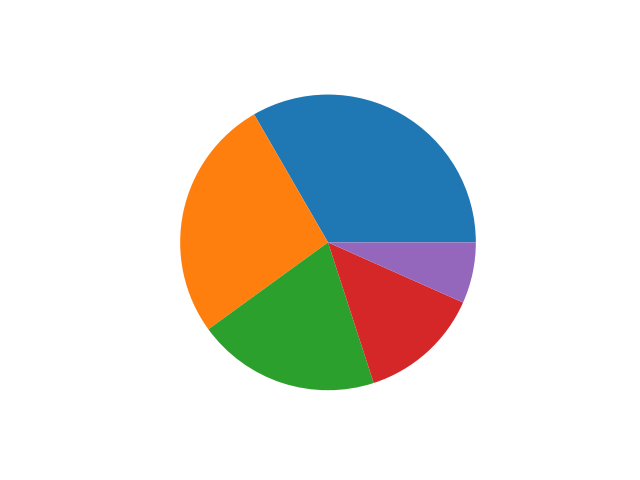
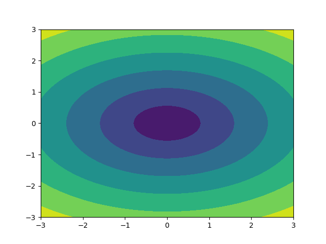
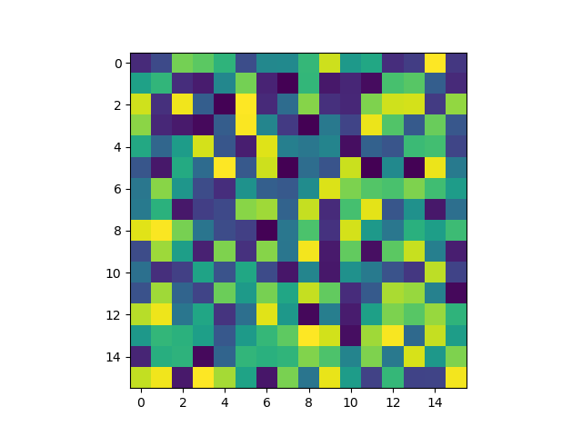
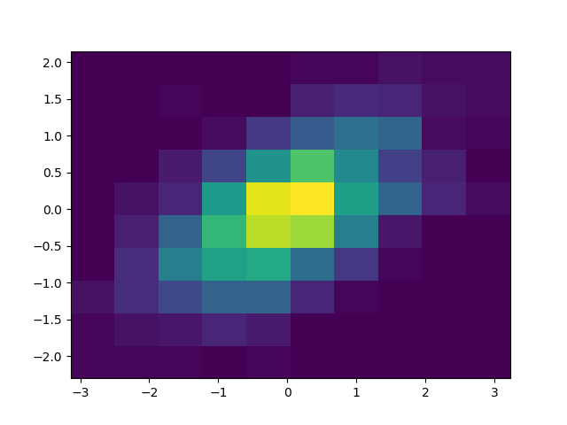
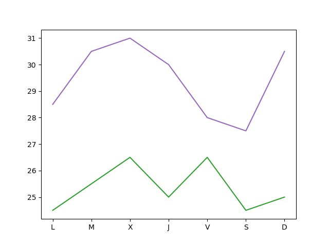
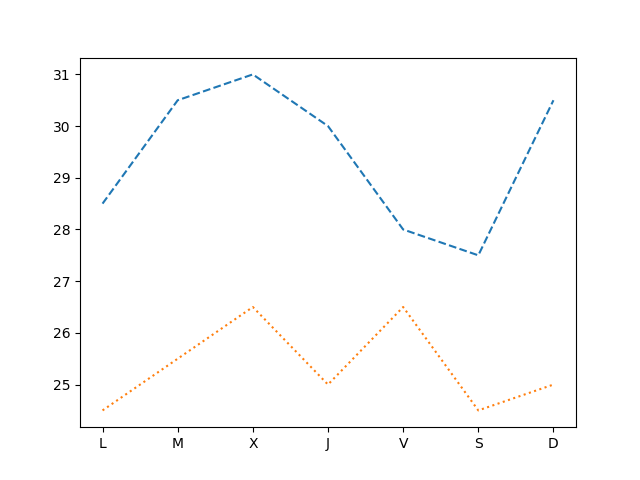
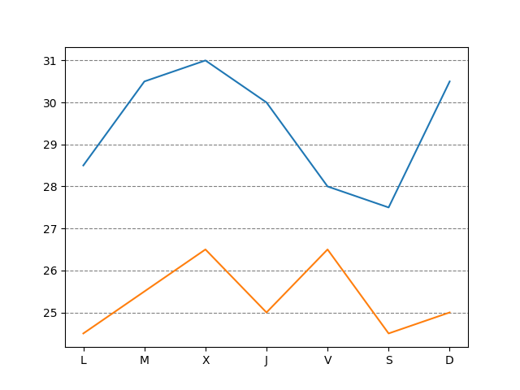

La librería Matplotlib Matplotlib es una librería de Python especializada en la creación de gráficos en dos dimensiones. Permite crear y personalizar los tipos de gráficos más comunes, entre ellos: Diagramas de barras Histograma Diagramas de sectores Diagramas de caja y bigotes Diagramas de violín Diagramas de dispersión o puntos Diagramas de lineas Diagramas de areas Diagramas de contorno Mapas de color y combinaciones de todos ellos. En la siguiente galería de gráficos pueden apreciarse todos los tipos de gráficos que pueden crearse con esta librería. Creación de gráficos con matplotlib Para crear un gráfico con matplotlib es habitual seguir los siguientes pasos: Importar el módulo pyplot. Definir la figura que contendrá el gráfico, que es la region (ventana o página) donde se dibujará y los ejes sobre los que se dibujarán los datos. Para ello se utiliza la función subplots(). Dibujar los datos sobre los ejes. Para ello se utilizan distintas funciones dependiendo del tipo de gráfico que se quiera. Personalizar el gráfico. Para ello existen multitud de funciones que permiten añadir un título, una leyenda, una rejilla, cambiar colores o personalizar los ejes. Guardar el gráfico. Para ello se utiliza la función savefig(). Mostrar el gráfico. Para ello se utiliza la función show(). # Importar el módulo pyplot con el alias plt import matplotlib.pyplot as plt # Crear la figura y los ejes fig, ax = plt.subplots() # Dibujar puntos ax.scatter(x = [1, 2, 3], y = [3, 2, 1]) # Guardar el gráfico en formato png plt.savefig('diagrama-dispersion.png') # Mostrar el gráfico plt.show() Diagramas de dispersión o puntos scatter(x, y): Dibuja un diagrama de puntos con las coordenadas de la lista x en el eje X y las coordenadas de la lista y en el eje Y. import matplotlib.pyplot as plt fig, ax = plt.subplots() ax.scatter([1, 2, 3, 4], [1, 2, 0, 0.5]) plt.show() Diagramas de líneas plot(x, y): Dibuja un polígono con los vértices dados por las coordenadas de la lista x en el eje X y las coordenadas de la lista y en el eje Y. import matplotlib.pyplot as plt fig, ax = plt.subplots() ax.plot([1, 2, 3, 4], [1, 2, 0, 0.5]) plt.show()  Diagramas de areas fill_between(x, y): Dibuja el area bajo el polígono con los vértices dados por las coordenadas de la lista x en el eje X y las coordenadas de la lista y en el eje Y. import matplotlib.pyplot as plt fig, ax = plt.subplots() ax.fill_between([1, 2, 3, 4], [1, 2, 0, 0.5]) plt.show() Diagramas de barras verticales bar(x, y): Dibuja un diagrama de barras verticales donde x es una lista con la posición de las barras en el eje X, e y es una lista con la altura de las barras en el eje Y. import matplotlib.pyplot as plt fig, ax = plt.subplots() ax.bar([1, 2, 3], [3, 2, 1]) plt.show()  Diagramas de barras horizontales barh(x, y): Dibuja un diagrama de barras horizontales donde x es una lista con la posición de las barras en el eje Y, e y es una lista con la longitud de las barras en el eje X. import matplotlib.pyplot as plt fig, ax = plt.subplots() ax.barh([1, 2, 3], [3, 2, 1]) plt.show() Histogramas hist(x, bins): Dibuja un histograma con las frecuencias resultantes de agrupar los datos de la lista x en las clases definidas por la lista bins. import numpy as np import matplotlib.pyplot as plt fig, ax = plt.subplots() x = np.random.normal(5, 1.5, size=1000) ax.hist(x, np.arange(0, 11)) plt.show() Diagramas de sectores pie(x): Dibuja un diagrama de sectores con las frecuencias de la lista x. import matplotlib.pyplot as plt fig, ax = plt.subplots() ax.pie([5, 4, 3, 2, 1]) plt.show()  Diagramas de caja y bigotes boxplot(x): Dibuja un diagrama de caja y bigotes con los datos de la lista x. import matplotlib.pyplot as plt fig, ax = plt.subplots() ax.boxplot([1, 2, 1, 2, 3, 4, 3, 3, 5, 7]) plt.show() Diagramas de violín violinplot(x): Dibuja un diagrama de violín con los datos de la lista x. import matplotlib.pyplot as plt fig, ax = plt.subplots() ax.violinplot([1, 2, 1, 2, 3, 4, 3, 3, 5, 7]) plt.show() Diagramas de contorno contourf(x, y, z): Dibuja un diagrama de contorno con las curvas de nivel de la superficie dada por los puntos con las coordenadas de las listas x, y y z en los ejes X, Y y Z respectivamente. import matplotlib.pyplot as plt fig, ax = plt.subplots() x = np.linspace(-3.0, 3.0, 100) y = np.linspace(-3.0, 3.0, 100) x, y = np.meshgrid(x, y) z = np.sqrt(x**2 + 2*y**2) ax.contourf(x, y, z) plt.show()  Mapas de color imshow(x): Dibuja un mapa de color a partir de una matriz (array bidimensiona) x. import matplotlib.pyplot as plt fig, ax = plt.subplots() x = np.random.random((16, 16)) ax.imshow(x) plt.show()  hist2d(x, y): Dibuja un mapa de color que simula un histograma bidimensional, donde los colores de los cuadrados dependen de las frecuencias de las clases de la muestra dada por las listas x e y. import matplotlib.pyplot as plt fig, ax = plt.subplots() x, y = np.random.multivariate_normal(mean=[0.0, 0.0], cov=[[1.0, 0.4], [0.4, 0.5]], size=1000).T ax.hist2d(x, y) plt.show()  Cambiar el aspecto de los gráficos Los gráficos creados con Matplotlib son personalizables y puede cambiarse el aspecto de casi todos sus elementos. Los elementos que suelen modificarse más a menudo son: Colores Marcadores de puntos Estilo de líneas Títulos Ejes Leyenda Rejilla Colores Para cambiar el color de los objetos se utiliza el parámetro color = nombre-color, donde nombre-color es una cadena con el nombre del color de entre los colores disponibles. import matplotlib.pyplot as plt fig, ax = plt.subplots() dias = ['L', 'M', 'X', 'J', 'V', 'S', 'D'] temperaturas = {'Madrid':[28.5, 30.5, 31, 30, 28, 27.5, 30.5], 'Barcelona':[24.5, 25.5, 26.5, 25, 26.5, 24.5, 25]} ax.plot(dias, temperaturas['Madrid'], color = 'tab:purple') ax.plot(dias, temperaturas['Barcelona'], color = 'tab:green') plt.show()  Marcadores Para cambiar la forma de los puntos marcadores se utiliza el parámetro marker = nombre-marcador donde nombre-marcador es una cadena con el nombre del marcador de entre los marcadores disponibles import matplotlib.pyplot as plt fig, ax = plt.subplots() dias = ['L', 'M', 'X', 'J', 'V', 'S', 'D'] temperaturas = {'Madrid':[28.5, 30.5, 31, 30, 28, 27.5, 30.5], 'Barcelona':[24.5, 25.5, 26.5, 25, 26.5, 24.5, 25]} ax.plot(dias, temperaturas['Madrid'], marker = '^') ax.plot(dias, temperaturas['Barcelona'], marker = 'o') plt.show() Líneas Para cambiar el estilo de las líneas se utiliza el parámetro linestyle = nombre-estilo donde nombre-estilo es una cadena con el nombre del estilo de entre los estilos disponibles import matplotlib.pyplot as plt fig, ax = plt.subplots() dias = ['L', 'M', 'X', 'J', 'V', 'S', 'D'] temperaturas = {'Madrid':[28.5, 30.5, 31, 30, 28, 27.5, 30.5], 'Barcelona':[24.5, 25.5, 26.5, 25, 26.5, 24.5, 25]} ax.plot(dias, temperaturas['Madrid'], linestyle = 'dashed') ax.plot(dias, temperaturas['Barcelona'], linestyle = 'dotted') plt.show()  Títulos Para añadir un título principal al gráfico se utiliza el siguiente método: ax.set_title(titulo, loc=alineacion, fontdict=fuente) : Añade un título con el contenido de la cadena titulo a los ejes ax. El parámetro loc indica la alineación del título, que puede ser 'left' (izquierda), 'center' (centro) o 'right' (derecha), y el parámetro fontdict indica mediante un diccionario las características de la fuente (la el tamaño fontisize, el grosor fontweight o el color color). import matplotlib.pyplot as plt fig, ax = plt.subplots() dias = ['L', 'M', 'X', 'J', 'V', 'S', 'D'] temperaturas = {'Madrid':[28.5, 30.5, 31, 30, 28, 27.5, 30.5], 'Barcelona':[24.5, 25.5, 26.5, 25, 26.5, 24.5, 25]} ax.plot(dias, temperaturas['Madrid']) ax.plot(dias, temperaturas['Barcelona']) ax.set_title('Evolución de la temperatura diaria', loc = "left", fontdict = {'fontsize':14, 'fontweight':'bold', 'color':'tab:blue'}) plt.show() Ejes Para cambiar el aspecto de los ejes se suelen utilizar los siguientes métodos: ax.set_xlabel(titulo) : Añade un título con el contenido de la cadena titulo al eje x de ax. Se puede personalizar la alineación y la fuente con los mismos parámetros que para el título principal. ax.set_ylabel(titulo) : Añade un título con el contenido de la cadena titulo al eje y de ax. Se puede personalizar la alineación y la fuente con los mismos parámetros que para el título principal. ax.set_xlim([limite-inferior, limite-superior]) : Establece los límites que se muestran en el eje x de ax. ax.set_ylim([limite-inferior, limite-superior]) : Establece los límites que se muestran en el eje y de ax. ax.set_xticks(marcas) : Dibuja marcas en el eje x de ax en las posiciones indicadas en la lista marcas. ax.set_yticks(marcas) : Dibuja marcas en el eje y de ax en las posiciones indicadas en la lista marcas. ax.set_xscale(escala) : Establece la escala del eje x de ax, donde el parámetro escala puede ser 'linear' (lineal) o 'log' (logarítmica). ax.set_yscale(escala) : Establece la escala del eje y de ax, donde el parámetro escala puede ser 'linear' (lineal) o 'log' (logarítmica). import matplotlib.pyplot as plt fig, ax = plt.subplots() dias = ['L', 'M', 'X', 'J', 'V', 'S', 'D'] temperaturas = {'Madrid':[28.5, 30.5, 31, 30, 28, 27.5, 30.5], 'Barcelona':[24.5, 25.5, 26.5, 25, 26.5, 24.5, 25]} ax.plot(dias, temperaturas['Madrid']) ax.plot(dias, temperaturas['Barcelona']) ax.set_xlabel("Días", fontdict = {'fontsize':14, 'fontweight':'bold', 'color':'tab:blue'}) ax.set_ylabel("Temperatura ºC") ax.set_ylim([20,35]) ax.set_yticks(range(20, 35)) plt.show() Leyenda Para añadir una leyenda a un gráfico se utiliza el siguiente método: ax.legend(leyendas, loc = posición) : Dibuja un leyenda en los ejes ax con los nombres indicados en la lista leyendas. El parámetro loc indica la posición en la que se dibuja la leyenda y puede ser 'upper left' (arriba izquierda), 'upper center' (arriba centro), 'upper right' (arriba derecha), 'center left' (centro izquierda), 'center' (centro), 'center right' (centro derecha), 'lower left' (abajo izquierda), 'lower center' (abajo centro), 'lower right' (abajo derecha). Se puede omitir la lista leyendas si se indica la leyenda de cada serie en la función que la dibuja mediante el parámetro label. import matplotlib.pyplot as plt fig, ax = plt.subplots() dias = ['L', 'M', 'X', 'J', 'V', 'S', 'D'] temperaturas = {'Madrid':[28.5, 30.5, 31, 30, 28, 27.5, 30.5], 'Barcelona':[24.5, 25.5, 26.5, 25, 26.5, 24.5, 25]} ax.plot(dias, temperaturas['Madrid'], label = 'Madrid') ax.plot(dias, temperaturas['Barcelona'], label = 'Barcelona') ax.legend(loc = 'upper right') plt.show() Rejilla ax.grid(axis=ejes, color=color, linestyle=estilo) : Dibuja una rejilla en los ejes de ax. El parámetro axis indica los ejes sobre los que se dibuja la regilla y puede ser 'x' (eje x), 'y' (eje y) o 'both' (ambos). Los parámetros color y linestyle establecen el color y el estilo de las líneas de la rejilla, y pueden tomar los mismos valores vistos en los apartados de colores y líneas. import matplotlib.pyplot as plt fig, ax = plt.subplots() dias = ['L', 'M', 'X', 'J', 'V', 'S', 'D'] temperaturas = {'Madrid':[28.5, 30.5, 31, 30, 28, 27.5, 30.5], 'Barcelona':[24.5, 25.5, 26.5, 25, 26.5, 24.5, 25]} ax.plot(dias, temperaturas['Madrid']) ax.plot(dias, temperaturas['Barcelona']) ax.grid(axis = 'y', color = 'gray', linestyle = 'dashed') plt.show()  Múltiples gráficos Es posible dibujar varios gráficos en distintos ejes en una misma figura organizados en forma de tabla. Para ello, cuando se inicializa la figura y los ejes, hay que pasarle a la función subplots el número de filas y columnas de la tabla que contendrá los gráficos. Con esto los distintos ejes se organizan en un array y se puede acceder a cada uno de ellos a través de sus índices. Si se quiere que los distintos ejes compartan los mismos límites para los ejes se pueden pasar los parámetros sharex = True para el eje x o sharey = True para el eje y. import matplotlib.pyplot as plt fig, ax = plt.subplots(2, 2, sharey = True) dias = ['L', 'M', 'X', 'J', 'V', 'S', 'D'] temperaturas = {'Madrid':[28.5, 30.5, 31, 30, 28, 27.5, 30.5], 'Barcelona':[24.5, 25.5, 26.5, 25, 26.5, 24.5, 25]} ax[0, 0].plot(dias, temperaturas['Madrid']) ax[0, 1].plot(dias, temperaturas['Barcelona'], color = 'tab:orange') ax[1, 0].bar(dias, temperaturas['Madrid']) ax[1, 1].bar(dias, temperaturas['Barcelona'], color = 'tab:orange') plt.show() Integración con Pandas Matplotlib se integra a la perfección con la librería Pandas, permitiendo dibujar gráficos a partir de los datos de las series y DataFrames de Pandas. df.plot(kind=tipo, x=columnax, y=columnay, ax=ejes) : Dibuja un diagrama del tipo indicado por el parámetro kind en los ejes indicados en el parámetro ax, representando en el eje x la columna del parámetro x y en el eje y la columna del parámetro y. El parámetro kind puede tomar como argumentos 'line' (lineas), 'scatter' (puntos), 'bar' (barras verticales), 'barh' (barras horizontales), 'hist' (histograma), 'box' (cajas), 'density' (densidad), 'area' (area) o 'pie' (sectores). Es posible pasar otros parámetros para indicar el color, el marcador o el estilo de línea como se vió en los apartados anteriores. import pandas as pd import matplotlib.pyplot as plt df = pd.DataFrame({'Días':['L', 'M', 'X', 'J', 'V', 'S', 'D'], 'Madrid':[28.5, 30.5, 31, 30, 28, 27.5, 30.5], 'Barcelona':[24.5, 25.5, 26.5, 25, 26.5, 24.5, 25]}) fig, ax = plt.subplots() df.plot(x = 'Días', y = 'Madrid', ax = ax) df.plot(x = 'Días', y = 'Barcelona', ax = ax) plt.show() Si no se indican los parámetros x e y se representa el índice de las filas en el eje x y una serie por cada columna del Dataframe. Las columnas no numéricas se ignoran. import pandas as pd import matplotlib.pyplot as plt df = pd.DataFrame({'Días':['L', 'M', 'X', 'J', 'V', 'S', 'D'], 'Madrid':[28.5, 30.5, 31, 30, 28, 27.5, 30.5], 'Barcelona':[24.5, 25.5, 26.5, 25, 26.5, 24.5, 25]}) df = df.set_index('Días') fig, ax = plt.subplots() df.plot(ax = ax) plt.show() Matplotlib Anterior La librería Pandas Siguiente Depuración de código